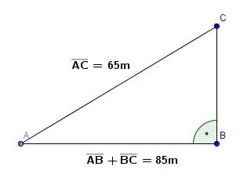

Aufgabe 128 Um von A nach C zu gelangen, gibt es zwei Möglichkeiten. Von A direkt nach C sind es 65 m. Von A nach C über B sind es 85 m. Wie weit ist B von A entfernt?

Die Strecke von A nach C = 65 m = Hypotenuse des rechtwinkligen Dreiecks Die Strecke von A nach B sei x m = Kathete Die Strecke von B nach C ist 85 - x m = Kathete Satz von Pythagoras: 652 = x2 + (85 - x)2 4225 = x2 + 7225 - 170x + x2 4225 = 2x2 - 170x + 7225 |-4225 2x2 - 170x + 3000 = 0 |:2 x2 - 85x + 1500 = 0 p, q - Formel p = -85 ; q = 1500 x1,2 = x1,2 = 42,5 ± x1,2 = 42,5 ± x1,2 = 42,5 ± 17,5 x1 = 42,5 + 17,5 = 60 m Strecke von A nach B x2 = 42,5 - 17,5 = 25 m Strecke von B nach C